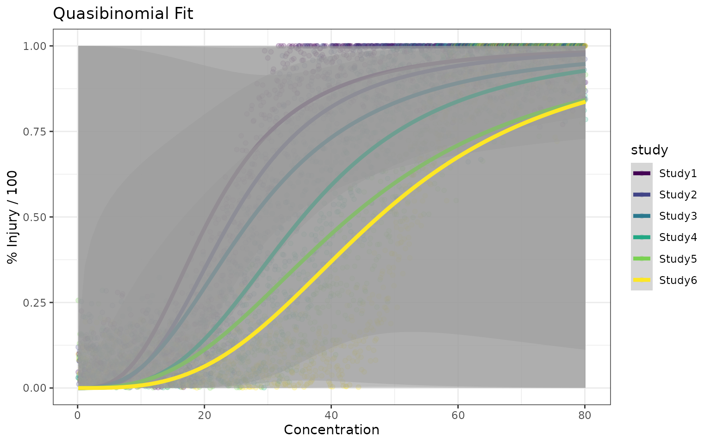

Background
There is no routine procedures in regulatory frameworks for ordinal data analysis yet. For histopathological data, it is recommended to use RSCABS (Rao-Scott Adjusted Cochran-Armitage Trend Test by Slices) to derive NOEALs. An alternative is MQJT.
Plant visual injury data has been evaluated qualitatively and it is possible to analyze them quantitatively
Ordinal Data in General
From a statistical point view, ordinal data is a type of categorical data where the order matters, but the exact differences or distances between the categories are not defined. For example, survey responses like “satisfied,” “neutral,” and “dissatisfied”, ranking like 1st, 2nd, 3rd, levels of education like high school, bachelor, master. Market research, psychology, health studies, and social sciences often use ordinal data.
Since ordinal data doesn’t assume equal intervals, non-parametric methods are often used. Medians rather than means are often the basis of comparisons. Chi-Square test can be used to determine if there is a significant association between two categorical variables. Spearman’s Rank Correlation and Kendall’s tau are correlation measures that can assess the strength and direction of association between two ranked variables.
Ordinal Regression is a somewhat complex method that can predict outcomes based on ordinal data. It helps understand how different factors influence rankings and the transition between the ordered categories.
- Proportional Odds Model: Coefficient (slopes) remains constant across all categories.
- Continuation Ratio Model: Model cumulative odds ratios.
- Adjacent Categories Model: useful when neighboring categories influence each other.
Due to the limited information and potentially unequal intervals, it requires a clear understanding of its subtleties and complexities, and careful attentions when implementing regression modelling.
In the ecotoxicology area, histopathology assessment and visual injury data are ranked categorical data.
Regression Approaches
Ordinal regression can be conducted using MASS::polr function or the function provided in GLMcat, which is an R package that encompasses lots of models specified in a similar way: (ratio, cdf, design: parallel or complete).
When transforming the ordinal variable into percentages or proportions, it is also possible to model them as continuous data or using logitic regression with quasibinomial assumptions. The two approaches produce similar results when the data is behaving truly like a dose-response with overe-dispersed binomial distributions.
dattab_new <- read.table(textConnection("Obs rep dose yt y0
1 1 2 0.02021 0
2 2 2 0.02491 0
3 3 2 0.00760 0
4 5 2 0.04466 0
5 6 2 0.00037 0
6 8 2 0.05386 0
7 9 2 0.07205 0
8 10 2 0.01125 0
9 1 4 0.02011 0
10 7 4 0.09058 0
11 8 4 0.06255 0
12 10 8 0.09431 0
13 4 2 0.14060 A
14 7 2 0.22223 A
15 2 4 0.20943 A
16 3 4 0.20959 A
17 4 4 0.17305 A
18 9 4 0.11405 A
19 10 4 0.17668 A
20 1 8 0.12756 A
21 6 8 0.11478 A
22 6 32 0.20602 A
23 5 4 0.26650 B
24 6 4 0.27344 B
25 3 8 0.27021 B
26 5 8 0.30662 B
27 8 8 0.29319 B
28 9 8 0.37300 B
29 6 16 0.36224 B
30 9 16 0.31316 B
31 2 8 0.55845 C
32 4 8 0.44811 C
33 3 16 0.42677 C
34 3 32 0.52315 C
35 7 8 0.67080 D
36 2 16 0.71776 D
37 4 16 0.73038 D
38 5 16 0.64232 D
39 7 16 0.68720 D
40 8 16 0.61088 D
41 5 32 0.72342 D
42 8 32 0.63594 D
43 1 16 0.77171 E
44 10 16 0.74087 E
45 2 32 0.79477 E
46 4 32 0.88546 E
47 7 32 0.78002 E
48 9 32 0.81456 E
49 10 32 0.89465 E
50 1 32 0.96129 F
51 1 64 0.96127 F
52 2 64 0.91687 F
53 3 64 0.97204 F
54 4 64 0.99268 F
55 5 64 0.98935 F
56 6 64 0.96263 F
57 7 64 0.95435 F
58 8 64 0.92081 F
59 9 64 0.91776 F
60 10 64 0.99104 F"),header = TRUE)
dattab_new <- dattab_new %>% mutate(yy = as.numeric(plyr::mapvalues(y0,from = c("0","A","B","C","D","E","F"),to = c(0,10,30,50,70,90,100)))/100) %>% mutate(yy2 = as.numeric(plyr::mapvalues(y0,from = c("0","A","B","C","D","E","F"),to = c(0.05,0.18,0.34,0.50,0.66,0.82,0.95))))
ftable(xtabs(~ y0 + dose, data = dattab_new)) ##%>% gt::gt() ## as.data.frame(.) %>% knitr::kable(.,digits = 3)#> dose 2 4 8 16 32 64
#> y0
#> 0 8 3 1 0 0 0
#> A 2 5 2 0 1 0
#> B 0 2 4 2 0 0
#> C 0 0 2 1 1 0
#> D 0 0 1 5 2 0
#> E 0 0 0 2 5 0
#> F 0 0 0 0 1 10
dattab_new %>% group_by(y0) %>% summarise(n=n(),meany=mean(yt),meanyy2=mean(yy2)) %>% knitr::kable(.,digits = 3)| y0 | n | meany | meanyy2 |
|---|---|---|---|
| 0 | 12 | 0.042 | 0.05 |
| A | 10 | 0.169 | 0.18 |
| B | 8 | 0.307 | 0.34 |
| C | 4 | 0.489 | 0.50 |
| D | 8 | 0.677 | 0.66 |
| E | 7 | 0.812 | 0.82 |
| F | 11 | 0.958 | 0.95 |
dattab_new %>% group_by(dose) %>% summarise(n=n(),meany=mean(yt),meanyy=mean(yy)) %>% knitr::kable(.,digits = 3)| dose | n | meany | meanyy |
|---|---|---|---|
| 2 | 10 | 0.060 | 0.02 |
| 4 | 10 | 0.160 | 0.11 |
| 8 | 10 | 0.326 | 0.31 |
| 16 | 10 | 0.600 | 0.64 |
| 32 | 10 | 0.722 | 0.75 |
| 64 | 10 | 0.958 | 1.00 |
ggplot(dattab_new,aes(x = dose, y=yt))+geom_point() + geom_smooth(method="glm", method.args=list(family="quasibinomial"), formula="y ~ log(x)",
se =TRUE, size=1.5)
#> Warning: Using `size` aesthetic for lines was deprecated in ggplot2 3.4.0.
#> ℹ Please use `linewidth` instead.
#> This warning is displayed once every 8 hours.
#> Call `lifecycle::last_lifecycle_warnings()` to see where this warning was
#> generated.
## fit ordered logit model and store results 'm'
dattab_new $y0 <- factor(dattab_new$y0, levels = c("0","A","B","C","D","E","F"),ordered = TRUE)
m <- MASS::polr(y0 ~ log(dose), data = dattab_new, Hess=TRUE)
summary(m)
#> Call:
#> MASS::polr(formula = y0 ~ log(dose), data = dattab_new, Hess = TRUE)
#>
#> Coefficients:
#> Value Std. Error t value
#> log(dose) 3.465 0.4876 7.106
#>
#> Intercepts:
#> Value Std. Error t value
#> 0|A 4.0061 0.8091 4.9513
#> A|B 6.3415 1.0283 6.1669
#> B|C 8.1921 1.2395 6.6092
#> C|D 9.1287 1.3489 6.7677
#> D|E 10.9709 1.5691 6.9917
#> E|F 12.9482 1.8234 7.1011
#>
#> Residual Deviance: 128.7906
#> AIC: 142.7906
ctable <- coef(summary(m))
## At ER50, the cumulative probability probability of the response being in a higher category is close to 1.
plogis(ctable[,1] + ctable[,2]*log(12.18))
#> log(dose) 0|A A|B B|C C|D D|E E|F
#> 0.9908438 0.9975973 0.9998653 0.9999875 0.9999963 0.9999997 1.0000000
## calculate and store p values
p <- pnorm(abs(ctable[, "t value"]), lower.tail = FALSE) * 2
## combined table
(ctable <- cbind(ctable, "p value" = p))
#> Value Std. Error t value p value
#> log(dose) 3.465155 0.4876298 7.106117 1.193530e-12
#> 0|A 4.006148 0.8091031 4.951344 7.370254e-07
#> A|B 6.341529 1.0283150 6.166913 6.963590e-10
#> B|C 8.192141 1.2395138 6.609156 3.865169e-11
#> C|D 9.128696 1.3488680 6.767672 1.308710e-11
#> D|E 10.970866 1.5691374 6.991654 2.716642e-12
#> E|F 12.948174 1.8234117 7.101070 1.237950e-12
(ci <- confint(m)) ## profiled CI
#> 2.5 % 97.5 %
#> 2.582836 4.504378
exp(cbind(coef(m),t(ci)))
#> 2.5 % 97.5 %
#> log(dose) 31.98141 13.23462 90.41212
## OR and CI
exp(cbind(OR = coef(m), ci))
#> OR ci
#> 2.5 % 31.98141 13.23462
#> 97.5 % 31.98141 90.41212
newdat <- data.frame(dose = unique(dattab_new$dose)) %>% mutate(logdose = log(dose))
(phat <- predict(object = m, newdat, type="p"))
#> 0 A B C D E
#> 1 8.326166e-01 0.1483000019 0.016035611 0.001850927 0.00100702 0.0001635762
#> 2 3.105443e-01 0.5126011687 0.144195119 0.019598385 0.01096824 0.0018025754
#> 3 3.918687e-02 0.2573055374 0.431914336 0.144078094 0.10487831 0.0194406374
#> 4 3.342916e-04 0.0031093320 0.018073161 0.031603441 0.20832988 0.4574198047
#> 5 3.679470e-03 0.0330795765 0.158639125 0.187148646 0.41376767 0.1694853156
#> 6 3.027903e-05 0.0002825179 0.001674417 0.003066947 0.02600507 0.1569497884
#> F
#> 1 2.628958e-05
#> 2 2.902582e-04
#> 3 3.196213e-03
#> 4 2.811301e-01
#> 5 3.420020e-02
#> 6 8.119910e-01
phat %>% knitr::kable(.,digits = 3)| 0 | A | B | C | D | E | F |
|---|---|---|---|---|---|---|
| 0.833 | 0.148 | 0.016 | 0.002 | 0.001 | 0.000 | 0.000 |
| 0.311 | 0.513 | 0.144 | 0.020 | 0.011 | 0.002 | 0.000 |
| 0.039 | 0.257 | 0.432 | 0.144 | 0.105 | 0.019 | 0.003 |
| 0.000 | 0.003 | 0.018 | 0.032 | 0.208 | 0.457 | 0.281 |
| 0.004 | 0.033 | 0.159 | 0.187 | 0.414 | 0.169 | 0.034 |
| 0.000 | 0.000 | 0.002 | 0.003 | 0.026 | 0.157 | 0.812 |
library(GLMcat)
dattab_new <- dattab_new %>% mutate(logdose = log(dose))
mod_ref_log_c <- glmcat(formula = y0 ~ logdose, ratio = "reference", cdf = "logistic", data = as.data.frame(dattab_new),ref="0",parallel = F)
#> Warning in glmcat(formula = y0 ~ logdose, ratio = "reference", cdf =
#> "logistic", : The response variable is defined as an ordered variable. Recall
#> that the the reference ratio is appropiate for nominal responses, while for
#> ordinal responses the ratios to use are cumulative, sequential or adjacent.
summary(mod_ref_log_c)
#> y0 ~ logdose
#> ratio cdf nobs niter logLik
#> Model info: reference logistic 60 15 -61.33542
#> Estimate Std. Error z value Pr(>|z|)
#> (Intercept) A -2.907 1.309 -2.221 0.026323 *
#> (Intercept) B -5.398 1.835 -2.942 0.003260 **
#> (Intercept) C -9.347 3.019 -3.096 0.001958 **
#> (Intercept) D -10.923 3.065 -3.564 0.000366 ***
#> (Intercept) E -17.421 4.838 -3.600 0.000318 ***
#> (Intercept) F -118.572 109742.356 -0.001 0.999138
#> logdose A 2.179 0.993 2.194 0.028225 *
#> logdose B 3.415 1.177 2.901 0.003725 **
#> logdose C 4.803 1.504 3.194 0.001404 **
#> logdose D 5.633 1.499 3.758 0.000172 ***
#> logdose E 7.692 1.895 4.058 4.94e-05 ***
#> logdose F 36.404 31664.951 0.001 0.999083
#> ---
#> Signif. codes: 0 '***' 0.001 '**' 0.01 '*' 0.05 '.' 0.1 ' ' 1
(phat <- predict(object = mod_ref_log_c, newdat, type="prob"))
#> A B C D E
#> [1,] 1.904456e-01 3.716346e-02 1.873707e-03 6.891895e-04 4.324730e-06
#> [2,] 4.075170e-01 1.873256e-01 2.472185e-02 1.616443e-02 4.225492e-04
#> [3,] 3.188563e-01 3.452649e-01 1.192710e-01 1.386298e-01 1.509628e-02
#> [4,] 5.226961e-03 3.140645e-02 7.433584e-02 2.730262e-01 5.159543e-01
#> [5,] 7.795418e-02 1.988396e-01 1.797976e-01 3.714905e-01 1.685225e-01
#> [6,] 2.602312e-12 3.683282e-11 2.281986e-10 1.489914e-09 1.172910e-08
#> F 0
#> [1,] 2.238527e-41 7.698238e-01
#> [2,] 9.621150e-31 3.638486e-01
#> [3,] 1.512050e-20 6.288173e-02
#> [4,] 1.000000e-01 5.029071e-05
#> [5,] 7.425066e-11 3.395654e-03
#> [6,] 1.000000e+00 5.662137e-15
phat %>% knitr::kable(.,digits = 3)| A | B | C | D | E | F | 0 |
|---|---|---|---|---|---|---|
| 0.190 | 0.037 | 0.002 | 0.001 | 0.000 | 0.0 | 0.770 |
| 0.408 | 0.187 | 0.025 | 0.016 | 0.000 | 0.0 | 0.364 |
| 0.319 | 0.345 | 0.119 | 0.139 | 0.015 | 0.0 | 0.063 |
| 0.005 | 0.031 | 0.074 | 0.273 | 0.516 | 0.1 | 0.000 |
| 0.078 | 0.199 | 0.180 | 0.371 | 0.169 | 0.0 | 0.003 |
| 0.000 | 0.000 | 0.000 | 0.000 | 0.000 | 1.0 | 0.000 |
## (phat <- predict(object = mod_ref_log_c, newdat, type="linear.predictor"))
mod_cum_logis <- glmcat(formula = y0 ~ logdose, ratio = "cumulative", cdf = "logistic", data = as.data.frame(dattab_new),parallel = TRUE)
summary(mod_cum_logis)
#> y0 ~ logdose
#> ratio cdf nobs niter logLik
#> Model info: cumulative logistic 60 9 -64.3953
#> Estimate Std. Error z value Pr(>|z|)
#> (Intercept) 0 4.0061 0.8142 4.920 8.64e-07 ***
#> (Intercept) A 6.3415 1.0419 6.086 1.16e-09 ***
#> (Intercept) B 8.1920 1.2583 6.510 7.50e-11 ***
#> (Intercept) C 9.1286 1.3693 6.666 2.62e-11 ***
#> (Intercept) D 10.9707 1.6005 6.854 7.16e-12 ***
#> (Intercept) E 12.9479 1.8194 7.117 1.11e-12 ***
#> logdose -3.4651 0.4912 -7.054 1.74e-12 ***
#> ---
#> Signif. codes: 0 '***' 0.001 '**' 0.01 '*' 0.05 '.' 0.1 ' ' 1
(phat <- predict(object = mod_cum_logis, newdat, type="prob"))
#> 0 A B C D E
#> [1,] 8.326186e-01 0.1482975531 0.016035767 0.001851046 0.001007102 0.000163596
#> [2,] 3.105557e-01 0.5125923926 0.144191357 0.019598856 0.010968693 0.001802725
#> [3,] 3.919032e-02 0.2573138937 0.431903119 0.144076171 0.104878455 0.019441472
#> [4,] 3.343480e-04 0.0031097342 0.018074387 0.031605029 0.208331116 0.457408504
#> [5,] 3.679947e-03 0.0330824671 0.158642283 0.187148395 0.413758936 0.169485389
#> [6,] 3.028531e-05 0.0002825654 0.001674598 0.003067232 0.026006412 0.156948672
#> F
#> [1,] 2.629451e-05
#> [2,] 2.903015e-04
#> [3,] 3.196565e-03
#> [4,] 2.811369e-01
#> [5,] 3.420258e-02
#> [6,] 8.119902e-01
phat %>% knitr::kable(.,digits = 3)| 0 | A | B | C | D | E | F |
|---|---|---|---|---|---|---|
| 0.833 | 0.148 | 0.016 | 0.002 | 0.001 | 0.000 | 0.000 |
| 0.311 | 0.513 | 0.144 | 0.020 | 0.011 | 0.002 | 0.000 |
| 0.039 | 0.257 | 0.432 | 0.144 | 0.105 | 0.019 | 0.003 |
| 0.000 | 0.003 | 0.018 | 0.032 | 0.208 | 0.457 | 0.281 |
| 0.004 | 0.033 | 0.159 | 0.187 | 0.414 | 0.169 | 0.034 |
| 0.000 | 0.000 | 0.002 | 0.003 | 0.026 | 0.157 | 0.812 |
Other understanding of the dataset
fit0 <- MASS::polr(y0 ~ 1,
data = dattab_new,
Hess= T)
fit0
#> Call:
#> MASS::polr(formula = y0 ~ 1, data = dattab_new, Hess = T)
#>
#> No coefficients
#>
#> Intercepts:
#> 0|A A|B B|C C|D D|E
#> -1.386294e+00 -5.465462e-01 -1.793225e-06 2.682586e-01 8.472940e-01
#> E|F
#> 1.493920e+00
#>
#> Residual Deviance: 228.003
#> AIC: 240.003
#source("https://github.com/rwnahhas/RMPH_Resources/raw/main/Functions_rmph.R")
ilogit <- function(x) exp(x)/(1+exp(x))
ilogit(fit0$zeta)
#> 0|A A|B B|C C|D D|E E|F
#> 0.2000001 0.3666661 0.4999996 0.5666653 0.6999992 0.8166659
sf <- function(y) {
c('Y>=1' = qlogis(mean(y >= 1)),
'Y>=2' = qlogis(mean(y >= 2)),
'Y>=3' = qlogis(mean(y >= 3)),
'Y>=4' = qlogis(mean(y >= 4)),
'Y>=5' = qlogis(mean(y >= 5)))
}
(s <- with(dattab_new, summary(as.numeric(y0) ~ factor(dose), fun=sf)))
#> Length Class Mode
#> 3 formula call
glm(I(as.numeric(y0) >= 2) ~ log(dose), family="binomial", data = dattab_new)
#>
#> Call: glm(formula = I(as.numeric(y0) >= 2) ~ log(dose), family = "binomial",
#> data = dattab_new)
#>
#> Coefficients:
#> (Intercept) log(dose)
#> -3.305 2.874
#>
#> Degrees of Freedom: 59 Total (i.e. Null); 58 Residual
#> Null Deviance: 60.05
#> Residual Deviance: 29.19 AIC: 33.19
glm(I(as.numeric(y0) >= 3) ~ log(dose), family="binomial", data = dattab_new)
#>
#> Call: glm(formula = I(as.numeric(y0) >= 3) ~ log(dose), family = "binomial",
#> data = dattab_new)
#>
#> Coefficients:
#> (Intercept) log(dose)
#> -5.089 2.726
#>
#> Degrees of Freedom: 59 Total (i.e. Null); 58 Residual
#> Null Deviance: 78.86
#> Residual Deviance: 33.83 AIC: 37.83
glm(I(as.numeric(y0) >= 4) ~ log(dose), family="binomial", data = dattab_new)
#>
#> Call: glm(formula = I(as.numeric(y0) >= 4) ~ log(dose), family = "binomial",
#> data = dattab_new)
#>
#> Coefficients:
#> (Intercept) log(dose)
#> -7.440 3.067
#>
#> Degrees of Freedom: 59 Total (i.e. Null); 58 Residual
#> Null Deviance: 83.18
#> Residual Deviance: 30.69 AIC: 34.69log-logistic with quasi-binomial
- TRUE ER50=12.18.
mod <- glm(yy2~log(dose),data = dattab_new,family = quasibinomial)
summary(mod)
#>
#> Call:
#> glm(formula = yy2 ~ log(dose), family = quasibinomial, data = dattab_new)
#>
#> Coefficients:
#> Estimate Std. Error t value Pr(>|t|)
#> (Intercept) -3.5064 0.3132 -11.19 4.02e-16 ***
#> log(dose) 1.3832 0.1171 11.81 < 2e-16 ***
#> ---
#> Signif. codes: 0 '***' 0.001 '**' 0.01 '*' 0.05 '.' 0.1 ' ' 1
#>
#> (Dispersion parameter for quasibinomial family taken to be 0.1163524)
#>
#> Null deviance: 31.8277 on 59 degrees of freedom
#> Residual deviance: 6.3595 on 58 degrees of freedom
#> AIC: NA
#>
#> Number of Fisher Scoring iterations: 5
ER50 <- exp(-coef(mod)[1]/coef(mod)[2])
ER50
#> (Intercept)
#> 12.617
getEC50(mod)
#> EC50 lower upper se
#> 1 12.617 10.77038 14.78023 1.023657
pred <- predict(mod,newdata = dattab_new,type = "response")
dattab_new$pred <- pred
dattab_new %>% group_by(y0) %>% summarise(n=n(),meany=mean(yt),meanyy2=mean(yy2),meanEst=mean(pred)) %>% knitr::kable(.,digits = 3)| y0 | n | meany | meanyy2 | meanEst |
|---|---|---|---|---|
| 0 | 12 | 0.042 | 0.05 | 0.120 |
| A | 10 | 0.169 | 0.18 | 0.247 |
| B | 8 | 0.307 | 0.34 | 0.361 |
| C | 4 | 0.489 | 0.50 | 0.515 |
| D | 8 | 0.677 | 0.66 | 0.603 |
| E | 7 | 0.812 | 0.82 | 0.726 |
| F | 11 | 0.958 | 0.95 | 0.893 |
## Consider Replicate effect
modr <- MASS::glmmPQL(yy2~ log(dose),random=~1|rep,family="quasibinomial",data=dattab_new)
ER50 <- exp(-coef(modr)[1]/coef(modr)[2])
exp(-modr$coefficients$fixed[1]/ modr$coefficients$fixed[2])
#> (Intercept)
#> 12.61695
summary(modr)
#> Linear mixed-effects model fit by maximum likelihood
#> Data: dattab_new
#> AIC BIC logLik
#> NA NA NA
#>
#> Random effects:
#> Formula: ~1 | rep
#> (Intercept) Residual
#> StdDev: 0.2256918 0.3155037
#>
#> Variance function:
#> Structure: fixed weights
#> Formula: ~invwt
#> Fixed effects: yy2 ~ log(dose)
#> Value Std.Error DF t-value p-value
#> (Intercept) -3.517527 0.3039553 49 -11.57251 0
#> log(dose) 1.387562 0.1103306 49 12.57640 0
#> Correlation:
#> (Intr)
#> log(dose) -0.907
#>
#> Standardized Within-Group Residuals:
#> Min Q1 Med Q3 Max
#> -3.9592347 -0.3047297 0.1382668 0.4944066 1.9353183
#>
#> Number of Observations: 60
#> Number of Groups: 10
getEC50(modr)
#> EC50 lower upper se
#> p = 0.5: 12.61695 10.56476 15.06777 1.149772
pred <- predict(modr,newdata = dattab_new,type = "response")
dattab_new$predr <- pred
dattab_new %>% group_by(y0) %>% summarise(n=n(),meany=mean(yt),meanyy2=mean(yy2),meanEst=mean(pred),meanEstR=mean(predr)) %>% knitr::kable(.,digits = 3)| y0 | n | meany | meanyy2 | meanEst | meanEstR |
|---|---|---|---|---|---|
| 0 | 12 | 0.042 | 0.05 | 0.120 | 0.120 |
| A | 10 | 0.169 | 0.18 | 0.247 | 0.240 |
| B | 8 | 0.307 | 0.34 | 0.361 | 0.342 |
| C | 4 | 0.489 | 0.50 | 0.515 | 0.517 |
| D | 8 | 0.677 | 0.66 | 0.603 | 0.620 |
| E | 7 | 0.812 | 0.82 | 0.726 | 0.736 |
| F | 11 | 0.958 | 0.95 | 0.893 | 0.894 |
Note that glmer and glmmPQL (based on lme from the nlme pacakge) differs in terms of parameter estimation algorithm and nlme is not optimized for dealing with crossed random effects, which are associated with a sparse design matrix. See more in the book from Pinheiro & Bates.[^1]
DRM Ordinal
library(drc)
library(bmd)
dat_ord <- dattab_new %>% group_by(y0,dose) %>% summarise(n=n()) %>% ungroup() %>% pivot_wider(names_from = y0,values_from = n)
dat_ord <- dat_ord %>% mutate(across(c(`0`,`A`,`B`,`C`,`D`,`E`,`F`),~ifelse(is.na(.),0,.))) %>% mutate(total=rowSums(across(c(`0`,`A`,`B`,`C`,`D`,`E`,`F`))))
mod_ord <- drmOrdinal(levels = unique(dattab_new$y0), weights="total",dose = "dose", data = dat_ord, fct = LL.2())
plot(mod_ord) # uses ggplot
bmdOrdinal(mod_ord, bmr = 0.5, backgType = "modelBased", def = "excess")
#> BMD BMDL
#> A+B+C+D+E+F 3.158208 2.298134
#> B+C+D+E+F 6.467922 4.757317
#> C+D+E+F 11.313719 8.507258
#> D+E+F 14.947346 11.193140
#> E+F 26.084222 20.202286
#> F 35.967446 -1.757891RSCABS
Here we give an example of performing the Rao-Scott Adjusted Cochran-Armitage Trend Test by Slices. RSCABS is designed to analyze histopathological results from standard toxicology experiments, for example the MEOGRT.
Steps in the testing procedure:
1.The Cochran-Armitage (CA) trend test was used to test a set of organisms for an increase in the presences (score > 0) or absence (score = 0) of an effect with an increase in the dose concentration of the treatments. 2. The Rao-Scott (RS) adjustment controls for the similarity in each experiment unit / apparatus (e.g., fish tank) by calculating an adjustment to the CA test statistic from correlation of organisms within each apparatuses. 3. The by slices (BS) part allows for testing at each severity score (e.g., from 1 to 5) instead of just presences or absence. By slices works by splitting the severity scores associated with an endpoint into two groups based on the severity score being tested. The RSCA test statistic is calculated based on these two groups. 4. Carry out a step-down procedure by excluding the highest treatment level in the analysis and recalculate the RSCA test statistic until the test stats is not significant or there is only control group left.
data("exampleHistData")
exampleHistData <- exampleHistData %>% as_tibble %>% mutate(across(where(is.integer),as.numeric)) %>% as.data.frame(.)
#Take the subset corresponding to F0-females of 16 weeks of age
subIndex<-which(exampleHistData$Generation=='F2' &
exampleHistData$Genotypic_Sex=='Female' &
exampleHistData$Age=='16_wk' )
exampleHistData.Sub<-exampleHistData[subIndex, ]
#Run RSCABS
exampleResults<-runRSCABS(exampleHistData.Sub,'Treatment',
'Replicate',test.type='RS')| Effect | Treatment | R.Score | Statistic | P.Value | Signif |
|---|---|---|---|---|---|
| Gon_Incr_Oocyte_Atresia1 | 5 | 1 | 1.330 | 0.092 | . |
| Gon_Incr_Oocyte_Atresia2 | 5 | 2 | 1.231 | 0.109 | . |
| Gon_Incr_Oocyte_Atresia3 | 5 | 3 | 1.231 | 0.109 | . |
| Gon_Incr_Oocyte_Atresia4 | 5 | 4 | 1.231 | 0.109 | . |
| Gon_Proteinaceous_fluid1 | 5 | 1 | -1.410 | 0.079 | . |
| Gon_Asynch_Dev1 | 5 | 1 | 2.622 | 0.004 | ** |
| Gon_Asynch_Dev2 | 5 | 2 | 2.622 | 0.004 | ** |
| Kid_Tub_Mineralization1 | 5 | 1 | 0.358 | 0.360 | . |
| Kid_Tub_Mineralization2 | 5 | 2 | -0.070 | 0.472 | . |
| Kid_Tub_Dilation1 | 5 | 1 | -0.070 | 0.472 | . |
| Kid_Tub_Dilation2 | 5 | 2 | -0.049 | 0.480 | . |
| Kid_Tub_Regeneration1 | 5 | 1 | -1.375 | 0.085 | . |
ggplot(exampleHistData.Sub,aes(x=Treatment,fill=factor(Gon_Asynch_Dev)))+geom_bar()+scale_fill_viridis_d()+labs(title="Example Data: Gon_Asynch_Dev",subtitle = "subset: F2 generation, 15 week age and female")
cids <-which(apply(exampleHistData.Sub[,-(1:5)],2,max)>0)
responses <- names(cids)
ggplot(exampleHistData.Sub[,c(1:5,5+cids)]%>%tidyr::pivot_longer(-(1:5),values_to = "Response",names_to = "Endpoint"),aes(x=Treatment,fill=factor(Response)))+geom_bar()+scale_fill_viridis_d()+labs(title="Example Histopath Data",subtitle = "subset: F2 generation, 15 week age and female")+facet_wrap(~Endpoint)
library(scales)
dat1 <- exampleHistData.Sub[,c(1:5,5+cids)]%>%tidyr::pivot_longer(-(1:5),values_to = "Response",names_to = "Endpoint") %>% group_by(Endpoint,Treatment,Response) %>% summarise(counts=n())%>% group_by(Endpoint,Treatment) %>% mutate(total=sum(counts))
ggplot(dat1,aes(x=Treatment,fill=factor(Response)))+geom_bar(aes(y=counts/total),stat = "identity")+scale_fill_viridis_d()+labs(title="Example Histopath Data",subtitle = "subset: F2 generation, 15 week age and female")+facet_wrap(~Endpoint,drop = T)+ scale_y_continuous(labels = percent)Function Notes
library(DependenciesGraphs)
dep <- funDependencies("package:drcHelper", "runRSCABS")
# visualization
plot(dep)Notes on RSCABS functions
- Select responses maximum value should be > 0 and smaller than 20??
- for each to be tested response/endpoints, convert2score
- for each to be tested response/endpoints, prepDataRSCABS, prepare the data into matrix/table format, treatment as column, replicate as row
- for each to be tested response/endpoints, stepKRSCABS.
The results look like below:
$Gon_Asynch_Dev
Effect Treatment R.Score Statistic P.Value Signif
1 Gon_Asynch_Dev1 5 1 2.622022 0.004370488 **
2 Gon_Asynch_Dev1 4 1 NaN 1.000000000 .
3 Gon_Asynch_Dev1 4 1 NaN 1.000000000 .
4 Gon_Asynch_Dev2 5 2 2.622022 0.004370488 **
5 Gon_Asynch_Dev2 4 2 NaN 1.000000000 .
6 Gon_Asynch_Dev2 4 2 NaN 1.000000000 .- combine the results into a big matrix.
References
- Agresti, A. (2002) Categorical Data Analysis, Second Edition. Hoboken, New Jersey: John Wiley & Sons, Inc.
- Harrell, F. E, (2001) Regression Modeling Strategies. New York: Springer-Verlag.
- http://www.sthda.com/english/articles/32-r-graphics-essentials/132-plot-grouped-data-box-plot-bar-plot-and-more/